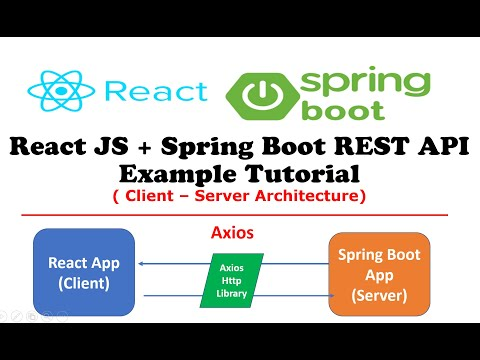
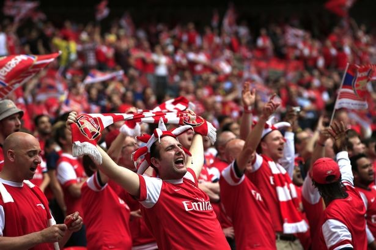

About Me
Hello! my name is Biniyam, a web developer with a passion for creating interactive and responsive web applications. I love to explore new technologies and apply them in my projects. In this exciting CTAC program I have learned about terminal, internet, GitHub, building webpage using html and css . I have done three projects based on what I have learned so far. I born and grew up in Ethiopia, I love playing soccer, reading books, and going to church for prayer. I watch premier leage games from britain, and I am arch supporter of Arsenal club
 